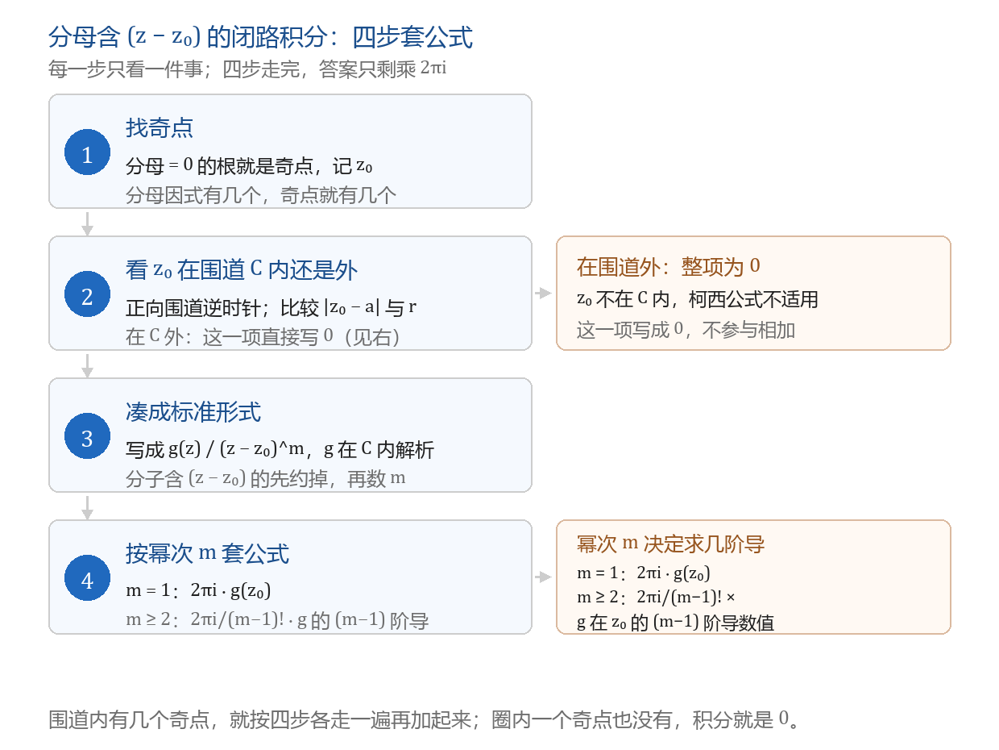
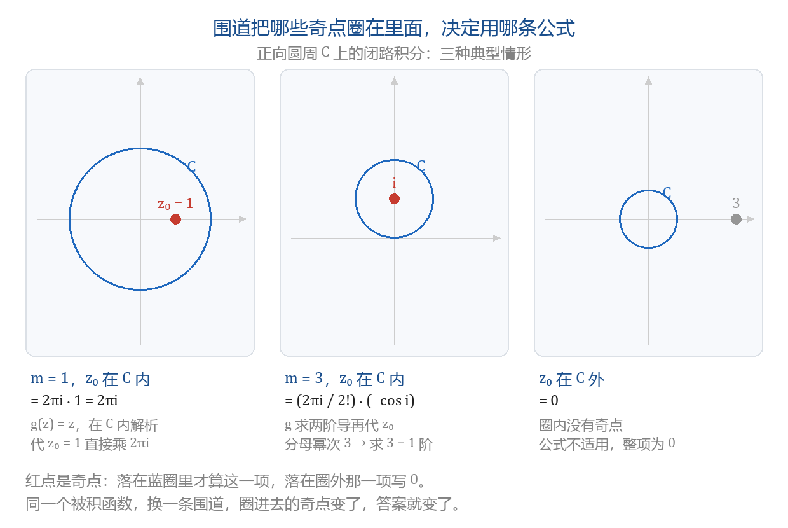

柯西积分公式与高阶导数
本节目标：能用柯西积分公式与高阶导数公式算出闭路积分。
卷面怎么考
本节的题只有一种形状：分母是 (z-z_0) 或它的幂，分子是解析函数，求沿正向圆周一整圈的积分。
- 解答题，7～10 分。合肥工业大学 2022～2024 的六套卷里有五套把这道题排在第 4 题，五个题面分别是 \frac{e^{iz}}{z^2-3\pi z+2\pi^2}（圆心 3、半径 4）、\frac{\sin z}{z^2+1}（圆心 1、半径 4）、\frac{\sin z+2z}{(z+\pi)^2}（圆心 -1、半径 4）、\frac{\cos z}{z^2(z+i)}（|z|=2）、\frac{e^z}{z(z-\pi i)^2}（|z|=4）。剩下的 2022 年 B 卷把它排在第 6 题，7 分。
- 填空与选择，3 分。2022 年 B 卷填 \oint_{|z|=1}\frac{1+z+z^2}{z^3}dz；2023 年 B 卷填 \oint_{|z|=2}\frac{dz}{(z+i)^{2023}}；2023 年两套卷的选择题给一个由积分定义的函数，问它在某点的导数值。
- 西安建筑科技大学的第四大题是两个 5 分小题：\oint_{|z|=2}\frac{z}{z-1}dz 与 \oint_C\frac{\cos z}{(z-i)^3}dz。
两条公式加一套四步动作覆盖这三处。第三章的留数定理会把同一批题压成一行，本节先把四步练熟。
唤醒：求导与因式分解
只用到两件旧工具，各一句。
求导：\cos z、\sin z、e^z 的导数与实函数同形，分式的商法则照用。高阶导数公式最多求到二阶、三阶。
因式分解：把分母拆成 (z-z_0)^m 与其余因子之积，例如 z^2-3\pi z+2\pi^2=(z-\pi)(z-2\pi)，z^2+1=(z-i)(z+i)，z^2(z+i)=z^2\cdot(z+i)。拆完，幂次与分母的零点同时到手；卷面上把分母的零点叫被积函数的奇点，本课沿用这个说法。
公式还有一条前提要记：除分母的零点外，被积函数在 C 及其内部解析。e^z、\cos z、1/(z-z_0) 这类商在分母零点之外都解析，判断依据是上一章的柯西-黎曼条件。
柯西积分公式
设 C 为正向简单闭曲线，f 在 C 及其内部解析，z_0 在 C 内部，则
用法一句话：分母是 z-z_0 的一次方时，把分子里的 z 全体换成 z_0，再乘 2\pi i。
上一节用参数化算出 \oint_{|z|=1}\frac{dz}{z}=2\pi i，那里用了一整行代换；这里取 f(z)\equiv1、z_0=0 代入公式，同一个 2\pi i 一行就到。
例（西建大第四大题，5 分）：C 为 |z|=2，求 \oint_C\frac{z}{z-1}dz。
分母零点 z_0=1，|1|<2 在圈内；分子 f(z)=z 在圈内解析。于是
高阶导数公式
分母幂次高于 1 时，用同一条公式的高阶版本：
条件与前一条相同。为便于上手，把分母幂次记作 m，则 n=m-1：
要记牢的只有三处：分母幂次 m、求 m-1 阶导、系数 \frac{2\pi i}{(m-1)!}。
| 分母幂次 m | 求几阶导 | 系数 |
|---|---|---|
| m=1 | 不求导，直接代 z_0 | 2\pi i |
| m=2 | 一阶 | 2\pi i |
| m=3 | 二阶 | \pi i |
| m=4 | 三阶 | \frac{\pi i}{3} |
m=1 那一行就是柯西积分公式，因为 0!=1。两条公式是同一条：分母幂次决定求几阶导，也决定阶乘的样子。
例（西建大第四大题，5 分）：C 为绕 i 一周的正向简单闭曲线，求 \oint_C\frac{\cos z}{(z-i)^3}dz。
m=3、z_0=i、f(z)=\cos z，二阶导为 (\cos z)''=-\cos z：
两个填空题走同一条路，差别只在分子：
- 2022 年 B 卷，\oint_{|z|=1}\frac{1+z+z^2}{z^3}dz：m=3、f(z)=1+z+z^2、f''=2，答案为 \frac{2\pi i}{2!}\cdot2=2\pi i。
- 2023 年 B 卷，\oint_{|z|=2}\frac{dz}{(z+i)^{2023}}：m=2023、f(z)=1，常数求任何正阶导都得 0，答案为 0，不必真去求 2022 阶导。
反向读公式
公式还有第二种用法：g 在 C 内解析、z 在 C 内时，\oint_C\frac{g(\zeta)}{\zeta-z}d\zeta 等于 2\pi i\,g(z)，于是求 f' 只需对 g 求导再乘 2\pi i。2023 年卷的选择题：设 f(z)=\oint_{|\zeta|=4}\frac{\sin\zeta-\cos\zeta}{\zeta-z}d\zeta，求 f'(\pi)。读出 f(z)=2\pi i(\sin z-\cos z)，则
四步套公式
题面一变，动作不变：
- 找奇点：分母 =0 的根。分母因式有几个，奇点就有几个。
- 看内外：|z_0-a| 与半径 r 比大小。小于 r 在圈内，大于 r 在圈外。
- 凑标准形式：把被积函数写成 \frac{g(z)}{(z-z_0)^m}，g 在 C 内解析。分母的其余因子连同分子一起归给 g；分子含 (z-z_0) 因子的先约掉，再数 m。
- 套公式：m=1 用柯西积分公式，m\ge2 用高阶导数公式。

assets/img/gen/柯西积分公式-四步流程-套公式-本机-01.py），许可：本项目自产）第 3 步是唯一要动手变形的环节。2022 年那份 10 分题：
四步落在纸上：
- 分母 z^2-3\pi z+2\pi^2=(z-\pi)(z-2\pi)，奇点是 \pi 与 2\pi。
- 圆心 3、半径 4：|\pi-3|\approx0.14<4，|2\pi-3|\approx3.28<4，两个都在圈内。
- 分母各是一次方。对 z_0=\pi 取 g(z)=\frac{e^{iz}}{z-2\pi}；对 z_0=2\pi 取 g(z)=\frac{e^{iz}}{z-\pi}。
- 各套一次柯西积分公式，再相加：
末一步用了 e^{i\pi}=-1 与 e^{2\pi i}=1。
第 3 步的三种常见形状：
| 分母 | 奇点 | 凑出的 g 与 m |
|---|---|---|
| z-z_0 | z_0 | 分子即 g，m=1 |
| (z-z_1)(z-z_2) | z_1,\ z_2 | 对 z_1：g=\frac{\text{分子}}{z-z_2}，m=1；对 z_2 对称地写 |
| z^2(z+i) | 0,\ -i | 对 0：g=\frac{\text{分子}}{z+i}，m=2；对 -i：g=\frac{\text{分子}}{z^2}，m=1 |
最后一行对应 2024 年卷的 10 分题 \oint_{|z|=2}\frac{\cos z}{z^2(z+i)}dz：奇点 0 那一项把 \frac{\cos z}{z+i} 求一阶导、代 z=0 得 1；奇点 -i 那一项把 \frac{\cos z}{z^2} 代 z=-i 得 -\cos i。两项相加：
奇点在围道内与外
围道决定答案。同一个被积函数换一条围道，圈进去的奇点变了，结果就变。

assets/img/gen/柯西积分公式-围道内外-奇点位置-本机-02.py），许可：本项目自产）圈内有两个以上奇点时，每个奇点各算一项，全部相加，少算一项就丢一半分。
例（B 集 3.2）：C 为 |z|=2，求 \oint_C\frac{dz}{z^2-1}。分母 z^2-1=(z-1)(z+1)，\pm1 都在圈内，各是一次方：
两项分别是 \pi i 与 -\pi i，相加才是 0；只算一项会写成 \pi i。2023 年卷的 \oint_{|z-1|=4}\frac{\sin z}{z^2+1}dz 同样办：\pm i 各一项，合计 2\pi\sin i=\pi i\left(e-\frac1e\right)。
奇点落在圈外时，这一项的值是 0。例：\oint_{|z|=1}\frac{e^z}{z-3}dz，分母零点 3 满足 |3|=3>1，圈内没有奇点，答案为 0。
这一条在选择题里正面考过（B 集 3.2 第 4 题）：设 f 为解析函数、f(z_0)\ne0，则 \oint_C\frac{f(z)}{z-z_0}dz=0 成立的条件是 z_0 在 C 外。
答案出现 0 的三种情形要分清：
| 情形 | 为什么是 0 |
|---|---|
| 分母零点全在圈外 | 圈内处处解析，公式没有下手处 |
| 分子是常数、幂次 m>1 | 常数求 m-1 阶导得 0 |
| 各奇点的项相加后抵消 | 每一项都不为 0，只有和是 0 |
与留数定理的分工
同一条 10 分题（「四步套公式」里那道 |z-3|=4 的题），参考答案写的是留数：\oint_C f\,dz=2\pi i\left(\operatorname{Res}[f,\pi]+\operatorname{Res}[f,2\pi]\right)=4i。本节公式给出的每一项 2\pi i\,g(z_0) 就是 2\pi i 乘该奇点的留数，两套算法落在同一串数上。
分工按题面形状定：
- 分母幂次清楚、分子求两阶导还便宜：用本节两条公式，这是第二章的位置。
- 奇点个数多、幂次高，或分子求到三阶以上导数才见分晓：用第三章的留数定理，一次加成。
- 卷面上两条路都给满分，先用先算完的那条。
上手做
这一课动手做两件事。
- 写一张对照卡。左列分母形状：z-z_0、(z-z_0)^2、(z-z_0)^3、(z-z_1)(z-z_2)、z^2(z+i)；中列奇点与幂次；右列对应的 g(z) 与该套的公式。每一行十秒内填完才算过。卡片收进纸笔题型整理册，第三章学留数时并排着用。
- 独立算完一道 10 分题，四步全写在纸上：找奇点 → 看内外 → 凑标准形式 → 套公式。算完把每一项的 g(z_0) 或 g^{(m-1)}(z_0) 单独核对一遍，丢分大多丢在这一格。
本课的小 lab 收在科目目录的 lab/ 下、目录名以 0009 开头：任务书、断言与参考解都在那里，lab/README.md 写着任务表与卡壳时的提示顺序。
带走的公式卡
| 题面给什么 | 用哪条 | 卷面位置 |
|---|---|---|
| \frac{f(z)}{z-z_0}，z_0 在 C 内 | 2\pi i\,f(z_0) | 填空、选择、解答题 |
| \frac{f(z)}{(z-z_0)^m}，z_0 在 C 内 | \frac{2\pi i}{(m-1)!}f^{(m-1)}(z_0) | 解答题 7～10 分 |
| 分母的零点有好几个，都在圈内 | 每个零点各算一项，相加 | 解答题 7～10 分 |
| z_0 在 C 外 | 这一项写 0 | 填空、选择 |
| 由 \oint_C\frac{g(\zeta)}{\zeta-z}d\zeta 定义的 f | f=2\pi i\,g，f'=2\pi i\,g' | 选择 3 分 |
- 李君、于非非《复变函数与积分变换》§2.2 柯西积分公式
- 合肥工业大学期末试卷（含答案与逐题分值）
- 复变积分解题集 B 集习题（西安建筑科技大学，按节分组）